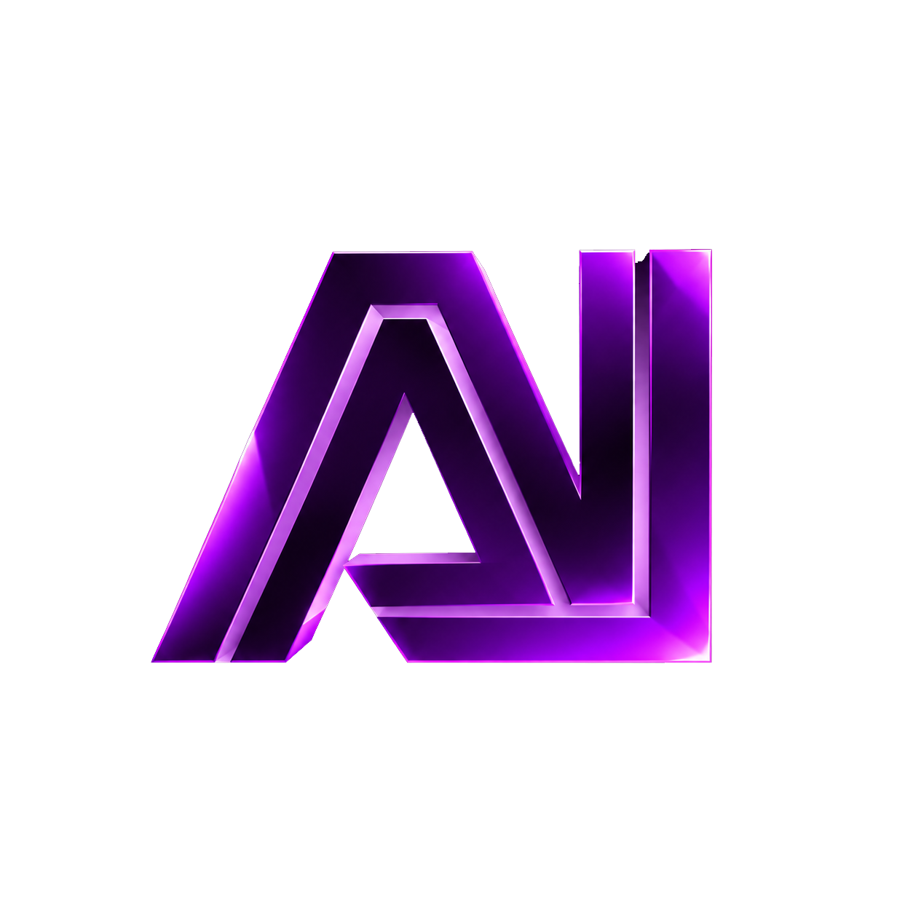
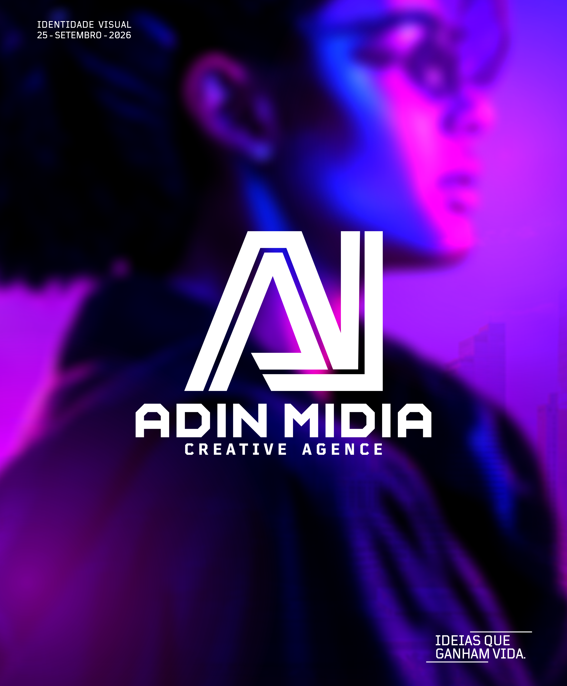

Design Gráfico
Identidades visuais, logótipos, cartazes, flyers, banners e materiais de comunicação.
↗
Transformamos conceitos em marcas fortes, experiências digitais e comunicação visual que fazem o seu negócio destacar-se.
Criatividade com estratégia.
Da ideia ao resultado.

A ADIN MIDIA é uma agência criativa que une ideias, talento e visão estratégica para transformar conceitos em soluções visuais e digitais de impacto.
Acreditamos que cada marca tem uma história para contar. A nossa missão é ajudá-la a comunicar com autenticidade, destacar-se no mercado e criar ligações reais com o seu público.
Conheça a nossa abordagem ↗Serviços pensados para construir uma presença consistente, memorável e preparada para crescer.
Identidades visuais, logótipos, cartazes, flyers, banners e materiais de comunicação.
↗Estratégia de marca, posicionamento e sistemas visuais que contam a sua história.
↗Websites modernos, responsivos e intuitivos para transformar visitas em oportunidades.
↗Preparação de artes e produção de materiais gráficos com atenção a cada detalhe.
↗Conteúdo visual, planeamento e comunicação para manter a sua marca activa e relevante.
↗Conteúdos visuais que apresentam produtos, serviços e histórias de forma marcante.
↗Unimos criatividade, tecnologia e estratégia para dar vida a ideias que movem negócios.
Dê vida à sua ideia ↗Um processo claro, colaborativo e focado nos objectivos do seu negócio.
Escutamos, fazemos perguntas e compreendemos a sua marca, o público e os desafios.
Definimos a direcção criativa e construímos uma solução alinhada com os seus objectivos.
Desenvolvemos, refinamos e preparamos cada peça com rigor visual e técnico.
Apresentamos o resultado final e ajudamos a sua marca a continuar a crescer.
Uma selecção demonstrativa de direcções visuais e áreas criativas da ADIN MIDIA.

IDENTIDADE VISUAL / 001Branding · Direcção de arte
 EXPERIÊNCIA DIGITAL / 002
EXPERIÊNCIA DIGITAL / 002Web design · UI/UX
 CAMPANHA SOCIAL / 003
CAMPANHA SOCIAL / 003Social media · Design
Os exemplos acima são conceitos demonstrativos. Substitua-os pelos projectos reais da agência.
Conte-nos o que está a imaginar. Vamos encontrar a melhor forma de transformar a sua ideia em impacto.